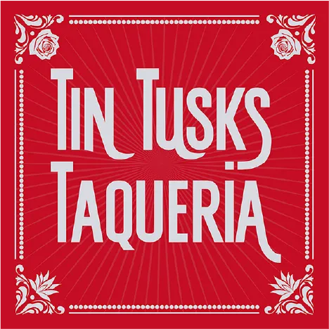
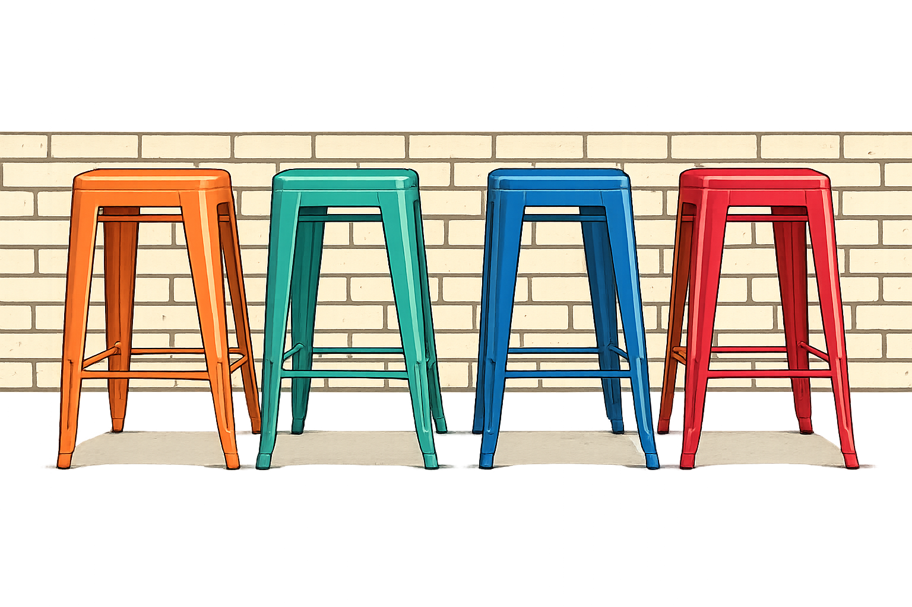
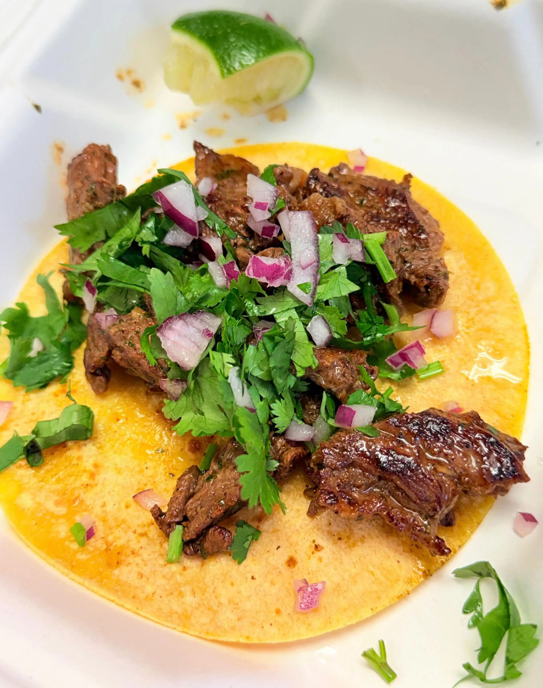

who we are
We are local business owners dedicated to providing the best tacos around!

112 S. Walnut St.
Howell, MI 48843
11am - 8pm Mon-Fri
Step up to the window and enjoy our delicious tacos and bowls, and grab an Elephant Ear while you're in Elephant Alley!
Located in downtown Howell, Michigan
We are local business owners dedicated to providing the best tacos around!

Stephanie is a Howell native and the owner of Tin Tusks Taqueria. She is dedicated to providing high-quality food and exceptional service to her community.
Do you serve alcohol?
No, but we have a great selection of non-alcoholic beverages, and are located in the Howell Social District. Feel free to bring a beer or margarita from the nearby bars!
Do you have seating?
We have a few stools for seating, but we are primarily a walk-up window. If we are full up, feel free to grab your food and enjoy it in the nearby or on the go!
Do you have vegetarian options?
Yes! We have a brussels sprouts taco, and can make any of our tacos or bowls vegetarian by substituting beans for meat.
